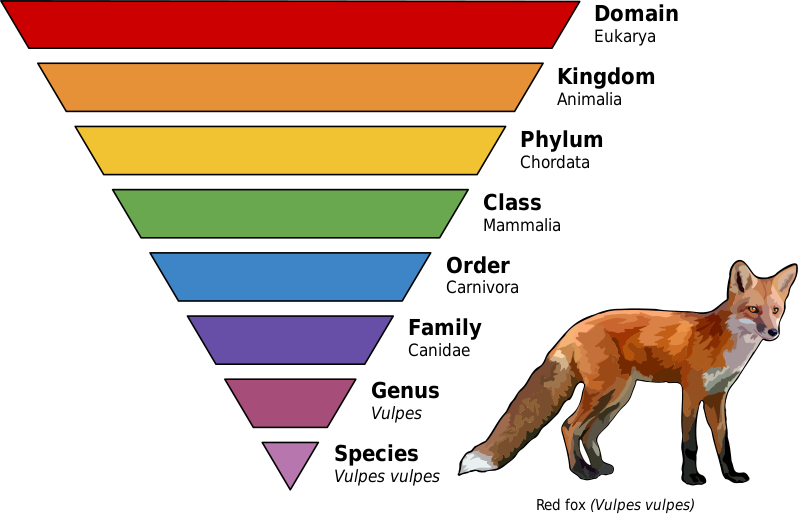
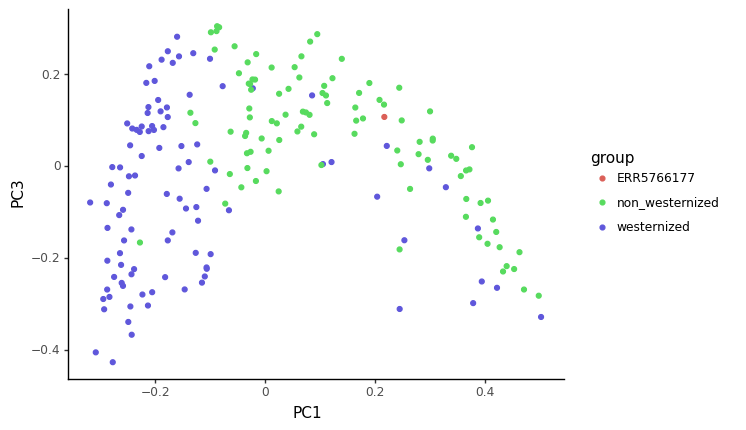
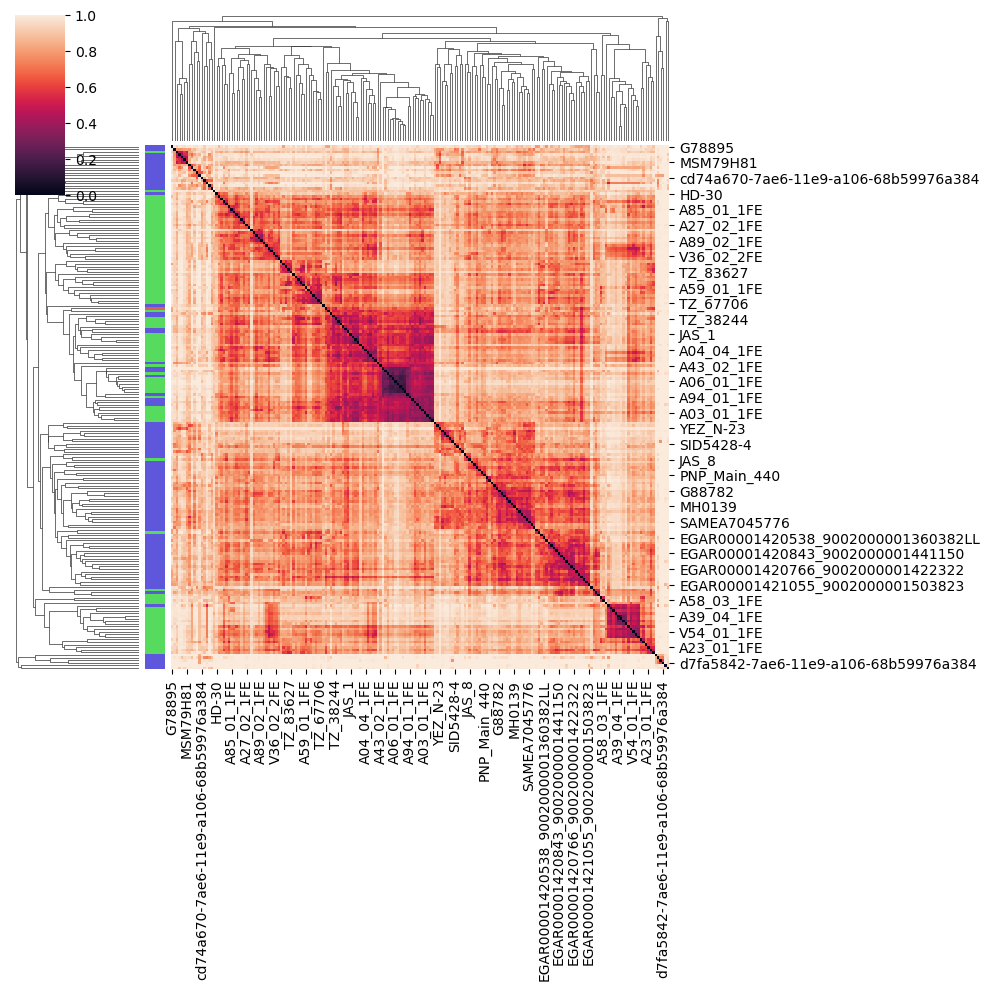

10 Taxonomic Profiling, OTU Tables and Visualisation
For this chapter’s exercises, if not already performed, you will need to create the conda environment from the yml file in the following archive, and activate the environment:
conda activate r-python10.1 Lecture
PDF version of these slides can be downloaded from here.
This session is run using a Jupyter notebook. This can be found here. However, it will already be installed on compute nodes during the summer school.
We highly recommend viewing this walkthrough via the Jupyter notebook above! The output of commands on the website for this walkthrough are displayed in their own code blocks - be wary of what you copy-paste!
10.2 Download and Subsample
import subprocess
import glob
from pathlib import PathFor this tutorial, we will be using the ERR5766177 library from the sample 2612 published by Maixner et al. 2021

 `
`
10.2.1 Subsampling the sequencing files to make the analysis quicker for this tutorial
def subsample(filename, outdir, depth=1000000):
basename = Path(filename).stem
cmd = f"seqtk sample -s42 {filename} {depth} > {outdir}/{basename}_subsample_{depth}.fastq"
print(cmd)
subprocess.check_output(cmd, shell=True)for f in glob.glob("../data/raw/*"):
outdir = "../data/subsampled"
subsample(f, outdir)seqtk sample -s42 ../data/raw/ERR5766177_PE.mapped.hostremoved.fwd.fq.gz 1000000 >
../data/subsampled/ERR5766177_PE.mapped.hostremoved.fwd.fq_subsample_1000000.fastq
seqtk sample -s42 ../data/raw/ERR5766177_PE.mapped.hostremoved.rev.fq.gz 1000000 >
../data/subsampled/ERR5766177_PE.mapped.hostremoved.rev.fq_subsample_1000000.fastq! gzip -f ../data/subsampled/*.fastq10.3 Hands on introduction to ancient microbiome analysis
Author: Maxime Borry
Date: 12/08/2021
In this tutorial, we’re going to go through the steps necessary to:
- generate a taxonomic profile table with metaphlan v3.0
- have a look at metaphlan results with Pavian and generate a Krona plot
- Compare the diversity of our samples vs the diversity of modern human gut samples
- Compare the composition of our samples vs modern gut samples, and see where they fit in a lower dimensional space
10.3.1 0. Quick intro to Jupyter Notebooks
This a markdown cell
print("This is a python cell")This is a python cell! echo "This is how to run a single line bash command"This is how to run a single line bash command%%bash
echo "This how to run a multi"
echo "lines bash command"This how to run a multi
lines bash command10.3.2 1. Data pre-processing
Before starting to analyze our data, we will need to pre-process them to remove reads mapping to the host genome, here, Homo sapiens
To do so, I’ve used nf-core/eager
I’ve already pre-processed the data, and the resulting cleaned files are available in the data/eager_cleaned, but the basic eager command to do so is:
nextflow run nf-core/eager -profile <docker/singularity/podman/conda/institute> --input '*_R{1,2}.fastq.gz' \
--fasta 'human_genome.fasta' --hostremoval_input_fastq10.3.3 2. Adapter sequence trimming and low-quality bases trimming
Sequencing adapters are small DNA sequences adding prior to DNA sequencing to allow the DNA fragments to attach to the sequencing flow cells. Because these adapters could interfere with downtstream analyses, we need to remove them before proceeding any further. Furthermore, because the quality of the sequencing is not always optimal, we need to remove bases of lower sequencing quality to might lead to spurious results in downstream analyses.
To perform both of these tasks, we’ll use the program fastp.
! fastp -hoption needs value: --html
usage: fastp [options] ...
options:
-i, --in1 read1 input file name (string [=])
-o, --out1 read1 output file name (string [=])
-I, --in2 read2 input file name (string [=])
-O, --out2 read2 output file name (string [=])
--unpaired1 for PE input, if read1 passed QC but read2 not, it will be written to unpaired1.
Default is to discard it. (string [=])
--unpaired2 for PE input, if read2 passed QC but read1 not, it will be written to unpaired2.
If --unpaired2 is same as --unpaired1 (default mode), both unpaired reads will be
written to this same file. (string [=])
--overlapped_out for each read pair, output the overlapped region if it has no any mismatched
base. (string [=])
--failed_out specify the file to store reads that cannot pass the filters. (string [=])
-m, --merge for paired-end input, merge each pair of reads into a single read if they are
overlapped. The merged reads will be written
to the file given by --merged_out, the unmerged reads will be written to the
files specified by --out1 and --out2. The merging mode is disabled by default.
--merged_out in the merging mode, specify the file name to store merged output, or specify
--stdout to stream the merged output (string [=])
--include_unmerged in the merging mode, write the unmerged or unpaired reads to the file specified
by --merge. Disabled by default.
-6, --phred64 indicate the input is using phred64 scoring (it'll be converted to phred33,
so the output will still be phred33)
-z, --compression compression level for gzip output (1 ~ 9). 1 is fastest, 9 is smallest, default is 4. (int [=4])
--stdin input from STDIN. If the STDIN is interleaved paired-end FASTQ, please also add --interleaved_in.
--stdout stream passing-filters reads to STDOUT. This option will result in interleaved
FASTQ output for paired-end output. Disabled by default.
--interleaved_in indicate that <in1> is an interleaved FASTQ which contains both read1 and read2.
Disabled by default.
--reads_to_process specify how many reads/pairs to be processed. Default 0 means process all reads. (int [=0])
--dont_overwrite don't overwrite existing files. Overwritting is allowed by default.
--fix_mgi_id the MGI FASTQ ID format is not compatible with many BAM operation tools, enable this option to fix it.
-V, --verbose output verbose log information (i.e. when every 1M reads are processed).
-A, --disable_adapter_trimming adapter trimming is enabled by default. If this option is specified, adapter trimming is disabled
-a, --adapter_sequence the adapter for read1. For SE data, if not specified, the adapter will be auto-detected.
For PE data, this is used if R1/R2 are found not overlapped. (string [=auto])
--adapter_sequence_r2 the adapter for read2 (PE data only). This is used if R1/R2 are found not overlapped.
If not specified, it will be the same as <adapter_sequence> (string [=auto])
--adapter_fasta specify a FASTA file to trim both read1 and read2 (if PE) by all the sequences in this FASTA file (string [=])
--detect_adapter_for_pe by default, the auto-detection for adapter is for SE data input only, turn on this
option to enable it for PE data.
-f, --trim_front1 trimming how many bases in front for read1, default is 0 (int [=0])
-t, --trim_tail1 trimming how many bases in tail for read1, default is 0 (int [=0])
-b, --max_len1 if read1 is longer than max_len1, then trim read1 at its tail to make it as
long as max_len1. Default 0 means no limitation (int [=0])
-F, --trim_front2 trimming how many bases in front for read2. If it's not specified, it will follow read1's settings (int [=0])
-T, --trim_tail2 trimming how many bases in tail for read2. If it's not specified, it will follow read1's settings (int [=0])
-B, --max_len2 if read2 is longer than max_len2, then trim read2 at its tail to make it as long as max_len2.
Default 0 means no limitation. If it's not specified, it will follow read1's settings (int [=0])
-D, --dedup enable deduplication to drop the duplicated reads/pairs
--dup_calc_accuracy accuracy level to calculate duplication (1~6), higher level uses more memory (1G, 2G, 4G, 8G, 16G, 24G).
Default 1 for no-dedup mode, and 3 for dedup mode. (int [=0])
--dont_eval_duplication don't evaluate duplication rate to save time and use less memory.
-g, --trim_poly_g force polyG tail trimming, by default trimming is automatically enabled for Illumina NextSeq/NovaSeq data
--poly_g_min_len the minimum length to detect polyG in the read tail. 10 by default. (int [=10])
-G, --disable_trim_poly_g disable polyG tail trimming, by default trimming is automatically enabled for Illumina NextSeq/NovaSeq data
-x, --trim_poly_x enable polyX trimming in 3' ends.
--poly_x_min_len the minimum length to detect polyX in the read tail. 10 by default. (int [=10])
-5, --cut_front move a sliding window from front (5') to tail, drop the bases in the window if
its mean quality < threshold, stop otherwise.
-3, --cut_tail move a sliding window from tail (3') to front, drop the bases in the window if
its mean quality < threshold, stop otherwise.
-r, --cut_right move a sliding window from front to tail, if meet one window with mean quality
< threshold, drop the bases in the window and the right part, and then stop.
-W, --cut_window_size the window size option shared by cut_front, cut_tail or cut_sliding. Range: 1~1000, default: 4 (int [=4])
-M, --cut_mean_quality the mean quality requirement option shared by cut_front, cut_tail or cut_sliding.
Range: 1~36 default: 20 (Q20) (int [=20])
--cut_front_window_size the window size option of cut_front, default to cut_window_size if not specified (int [=4])
--cut_front_mean_quality the mean quality requirement option for cut_front, default to cut_mean_quality if not specified (int [=20])
--cut_tail_window_size the window size option of cut_tail, default to cut_window_size if not specified (int [=4])
--cut_tail_mean_quality the mean quality requirement option for cut_tail, default to cut_mean_quality if not specified (int [=20])
--cut_right_window_size the window size option of cut_right, default to cut_window_size if not specified (int [=4])
--cut_right_mean_quality the mean quality requirement option for cut_right, default to cut_mean_quality if not specified (int [=20])
-Q, --disable_quality_filtering quality filtering is enabled by default. If this option is specified, quality filtering is disabled
-q, --qualified_quality_phred the quality value that a base is qualified. Default 15 means phred quality >=Q15 is qualified. (int [=15])
-u, --unqualified_percent_limit how many percents of bases are allowed to be unqualified (0~100). Default 40 means 40% (int [=40])
-n, --n_base_limit if one read's number of N base is >n_base_limit, then this read/pair is discarded. Default is 5 (int [=5])
-e, --average_qual if one read's average quality score <avg_qual, then this read/pair is discarded.
Default 0 means no requirement (int [=0])
-L, --disable_length_filtering length filtering is enabled by default. If this option is specified, length filtering is disabled
-l, --length_required reads shorter than length_required will be discarded, default is 15. (int [=15])
--length_limit reads longer than length_limit will be discarded, default 0 means no limitation. (int [=0])
-y, --low_complexity_filter enable low complexity filter. The complexity is defined as the percentage of base
that is different from its next base (base[i] != base[i+1]).
-Y, --complexity_threshold the threshold for low complexity filter (0~100). Default is 30, which means 30% complexity is required. (int [=30])
--filter_by_index1 specify a file contains a list of barcodes of index1 to be filtered out, one barcode per line (string [=])
--filter_by_index2 specify a file contains a list of barcodes of index2 to be filtered out, one barcode per line (string [=])
--filter_by_index_threshold the allowed difference of index barcode for index filtering, default 0 means completely identical. (int [=0])
-c, --correction enable base correction in overlapped regions (only for PE data), default is disabled
--overlap_len_require the minimum length to detect overlapped region of PE reads. This will affect overlap analysis based PE merge,
adapter trimming and correction. 30 by default. (int [=30])
--overlap_diff_limit the maximum number of mismatched bases to detect overlapped region of PE reads.
This will affect overlap analysis based PE merge, adapter trimming and correction. 5 by default. (int [=5])
--overlap_diff_percent_limit the maximum percentage of mismatched bases to detect overlapped region of PE reads.
This will affect overlap analysis based PE merge, adapter trimming and correction. Default 20 means 20%. (int [=20])
-U, --umi enable unique molecular identifier (UMI) preprocessing
--umi_loc specify the location of UMI, can be (index1/index2/read1/read2/per_index/per_read, default is none (string [=])
--umi_len if the UMI is in read1/read2, its length should be provided (int [=0])
--umi_prefix if specified, an underline will be used to connect prefix and UMI (i.e.
prefix=UMI, UMI=AATTCG, final=UMI_AATTCG). No prefix by default (string [=])
--umi_skip if the UMI is in read1/read2, fastp can skip several bases following UMI, default is 0 (int [=0])
-p, --overrepresentation_analysis enable overrepresented sequence analysis.
-P, --overrepresentation_sampling one in (--overrepresentation_sampling) reads will be computed for overrepresentation
analysis (1~10000), smaller is slower, default is 20. (int [=20])
-j, --json the json format report file name (string [=fastp.json])
-h, --html the html format report file name (string [=fastp.html])
-R, --report_title should be quoted with ' or ", default is "fastp report" (string [=fastp report])
-w, --thread worker thread number, default is 3 (int [=3])
-s, --split split output by limiting total split file number with this option (2~999), a sequential number prefix
will be added to output name ( 0001.out.fq, 0002.out.fq...), disabled by default (int [=0])
-S, --split_by_lines split output by limiting lines of each file with this option(>=1000), a sequential number prefix will be
added to output name ( 0001.out.fq, 0002.out.fq...), disabled by default (long [=0])
-d, --split_prefix_digits the digits for the sequential number padding (1~10), default is 4, so the filename will be padded as
0001.xxx, 0 to disable padding (int [=4])
--cut_by_quality5 DEPRECATED, use --cut_front instead.
--cut_by_quality3 DEPRECATED, use --cut_tail instead.
--cut_by_quality_aggressive DEPRECATED, use --cut_right instead.
--discard_unmerged DEPRECATED, no effect now, see the introduction for merging.
-?, --help print this message%%bash
fastp \
--in1 ../data/subsampled/ERR5766177_PE.mapped.hostremoved.fwd.fq_subsample_1000000.fastq.gz \
--in2 ../data/subsampled/ERR5766177_PE.mapped.hostremoved.fwd.fq_subsample_1000000.fastq.gz \
--merge \
--merged_out ../results/fastp/ERR5766177.merged.fastq.gz \
--include_unmerged \
--dedup \
--json ../results/fastp/ERR5766177.fastp.json \
--html ../results/fastp/ERR5766177.fastp.html \Read1 before filtering:
total reads: 1000000
total bases: 101000000
Q20 bases: 99440729(98.4562%)
Q30 bases: 94683150(93.7457%)
Read2 before filtering:
total reads: 1000000
total bases: 101000000
Q20 bases: 99440729(98.4562%)
Q30 bases: 94683150(93.7457%)
Merged and filtered:
total reads: 1994070
total bases: 201397311
Q20 bases: 198330392(98.4772%)
Q30 bases: 188843169(93.7665%)
Filtering result:
reads passed filter: 1999252
reads failed due to low quality: 728
reads failed due to too many N: 20
reads failed due to too short: 0
reads with adapter trimmed: 282
bases trimmed due to adapters: 18654
reads corrected by overlap analysis: 0
bases corrected by overlap analysis: 0
Duplication rate: 0.2479%
Insert size peak (evaluated by paired-end reads): 31
Read pairs merged: 228
% of original read pairs: 0.0228%
% in reads after filtering: 0.0114339%
JSON report: ../results/fastp/ERR5766177.fastp.json
HTML report: ../results/fastp/ERR5766177.fastp.html
fastp --in1 ../data/subsampled/ERR5766177_PE.mapped.hostremoved.fwd.fq_subsample_1000000.fastq.gz \
--in2 ../data/subsampled/ERR5766177_PE.mapped.hostremoved.fwd.fq_subsample_1000000.fastq.gz --merge \
--merged_out ../results/fastp/ERR5766177.merged.fastq.gz --include_unmerged --dedup \
--json ../results/fastp/ERR5766177.fastp.json --html ../results/fastp/ERR5766177.fastp.html
fastp v0.23.2, time used: 11 seconds10.3.3.0.1 3. Taxonomic profiling with Metaphlan
! metaphlan --helpusage: metaphlan --input_type {fastq,fasta,bowtie2out,sam} [--force]
[--bowtie2db METAPHLAN_BOWTIE2_DB] [-x INDEX]
[--bt2_ps BowTie2 presets] [--bowtie2_exe BOWTIE2_EXE]
[--bowtie2_build BOWTIE2_BUILD] [--bowtie2out FILE_NAME]
[--min_mapq_val MIN_MAPQ_VAL] [--no_map] [--tmp_dir]
[--tax_lev TAXONOMIC_LEVEL] [--min_cu_len]
[--min_alignment_len] [--add_viruses] [--ignore_eukaryotes]
[--ignore_bacteria] [--ignore_archaea] [--stat_q]
[--perc_nonzero] [--ignore_markers IGNORE_MARKERS]
[--avoid_disqm] [--stat] [-t ANALYSIS TYPE]
[--nreads NUMBER_OF_READS] [--pres_th PRESENCE_THRESHOLD]
[--clade] [--min_ab] [-o output file] [--sample_id_key name]
[--use_group_representative] [--sample_id value]
[-s sam_output_file] [--legacy-output] [--CAMI_format_output]
[--unknown_estimation] [--biom biom_output] [--mdelim mdelim]
[--nproc N] [--install] [--force_download]
[--read_min_len READ_MIN_LEN] [-v] [-h]
[INPUT_FILE] [OUTPUT_FILE]
DESCRIPTION
MetaPhlAn version 3.1.0 (25 Jul 2022):
METAgenomic PHyLogenetic ANalysis for metagenomic taxonomic profiling.
AUTHORS: Francesco Beghini (francesco.beghini@unitn.it),Nicola Segata (nicola.segata@unitn.it), Duy Tin Truong,
Francesco Asnicar (f.asnicar@unitn.it), Aitor Blanco Miguez (aitor.blancomiguez@unitn.it)
COMMON COMMANDS
We assume here that MetaPhlAn is installed using the several options available (pip, conda, PyPi)
Also BowTie2 should be in the system path with execution and read permissions, and Perl should be installed)
========== MetaPhlAn clade-abundance estimation =================
The basic usage of MetaPhlAn consists in the identification of the clades (from phyla to species )
present in the metagenome obtained from a microbiome sample and their
relative abundance. This correspond to the default analysis type (-t rel_ab).
* Profiling a metagenome from raw reads:
$ metaphlan metagenome.fastq --input_type fastq -o profiled_metagenome.txt
* You can take advantage of multiple CPUs and save the intermediate BowTie2 output for re-running
MetaPhlAn extremely quickly:
$ metaphlan metagenome.fastq --bowtie2out metagenome.bowtie2.bz2 --nproc 5 --input_type fastq -o profiled_metagenome.txt
* If you already mapped your metagenome against the marker DB (using a previous MetaPhlAn run), you
can obtain the results in few seconds by using the previously saved --bowtie2out file and
specifying the input (--input_type bowtie2out):
$ metaphlan metagenome.bowtie2.bz2 --nproc 5 --input_type bowtie2out -o profiled_metagenome.txt
* bowtie2out files generated with MetaPhlAn versions below 3 are not compatibile.
Starting from MetaPhlAn 3.0, the BowTie2 ouput now includes the size of the profiled metagenome and the average read length.
If you want to re-run MetaPhlAn using these file you should provide the metagenome size via --nreads:
$ metaphlan metagenome.bowtie2.bz2 --nproc 5 --input_type bowtie2out --nreads 520000 -o profiled_metagenome.txt
* You can also provide an externally BowTie2-mapped SAM if you specify this format with
--input_type. Two steps: first apply BowTie2 and then feed MetaPhlAn with the obtained sam:
$ bowtie2 --sam-no-hd --sam-no-sq --no-unal --very-sensitive -S metagenome.sam -x \
${mpa_dir}/metaphlan_databases/mpa_v30_CHOCOPhlAn_201901 -U metagenome.fastq
$ metaphlan metagenome.sam --input_type sam -o profiled_metagenome.txt
* We can also natively handle paired-end metagenomes, and, more generally, metagenomes stored in
multiple files (but you need to specify the --bowtie2out parameter):
$ metaphlan metagenome_1.fastq,metagenome_2.fastq --bowtie2out metagenome.bowtie2.bz2 --nproc 5 --input_type fastq
-------------------------------------------------------------------
========== Marker level analysis ============================
MetaPhlAn introduces the capability of characterizing organisms at the strain level using non
aggregated marker information. Such capability comes with several slightly different flavours and
are a way to perform strain tracking and comparison across multiple samples.
Usually, MetaPhlAn is first ran with the default -t to profile the species present in
the community, and then a strain-level profiling can be performed to zoom-in into specific species
of interest. This operation can be performed quickly as it exploits the --bowtie2out intermediate
file saved during the execution of the default analysis type.
* The following command will output the abundance of each marker with a RPK (reads per kilo-base)
higher 0.0. (we are assuming that metagenome_outfmt.bz2 has been generated before as
shown above).
$ metaphlan -t marker_ab_table metagenome_outfmt.bz2 --input_type bowtie2out -o marker_abundance_table.txt
The obtained RPK can be optionally normalized by the total number of reads in the metagenome
to guarantee fair comparisons of abundances across samples. The number of reads in the metagenome
needs to be passed with the '--nreads' argument
* The list of markers present in the sample can be obtained with '-t marker_pres_table'
$ metaphlan -t marker_pres_table metagenome_outfmt.bz2 --input_type bowtie2out -o marker_abundance_table.txt
The --pres_th argument (default 1.0) set the minimum RPK value to consider a marker present
* The list '-t clade_profiles' analysis type reports the same information of '-t marker_ab_table'
but the markers are reported on a clade-by-clade basis.
$ metaphlan -t clade_profiles metagenome_outfmt.bz2 --input_type bowtie2out -o marker_abundance_table.txt
* Finally, to obtain all markers present for a specific clade and all its subclades, the
'-t clade_specific_strain_tracker' should be used. For example, the following command
is reporting the presence/absence of the markers for the B. fragilis species and its strains
the optional argument --min_ab specifies the minimum clade abundance for reporting the markers
$ metaphlan -t clade_specific_strain_tracker --clade s__Bacteroides_fragilis metagenome_outfmt.bz2 --input_typ
bowtie2out -o marker_abundance_table.txt
-------------------------------------------------------------------
positional arguments:
INPUT_FILE the input file can be:
* a fastq file containing metagenomic reads
OR
* a BowTie2 produced SAM file.
OR
* an intermediary mapping file of the metagenome generated by a previous MetaPhlAn run
If the input file is missing, the script assumes that the input is provided using the standard
input, or named pipes.
IMPORTANT: the type of input needs to be specified with --input_type
OUTPUT_FILE the tab-separated output file of the predicted taxon relative abundances
[stdout if not present]
Required arguments:
--input_type {fastq,fasta,bowtie2out,sam}
set whether the input is the FASTA file of metagenomic reads or
the SAM file of the mapping of the reads against the MetaPhlAn db.
Mapping arguments:
--force Force profiling of the input file by removing the bowtie2out file
--bowtie2db METAPHLAN_BOWTIE2_DB
Folder containing the MetaPhlAn database. You can specify the location by exporting the
DEFAULT_DB_FOLDER variable in the shell.
[default /Users/maxime/mambaforge/envs/summer_school_microbiome/lib/python3.9/site-packages/metaphlan/metaphlan_databases]
-x INDEX, --index INDEX
Specify the id of the database version to use. If "latest", MetaPhlAn will get the latest version.
If an index name is provided, MetaPhlAn will try to use it, if available, and skip the online check.
If the database files are not found on the local MetaPhlAn installation they
will be automatically downloaded [default latest]
--bt2_ps BowTie2 presets
Presets options for BowTie2 (applied only when a FASTA file is provided)
The choices enabled in MetaPhlAn are:
* sensitive
* very-sensitive
* sensitive-local
* very-sensitive-local
[default very-sensitive]
--bowtie2_exe BOWTIE2_EXE
Full path and name of the BowTie2 executable. This option allowsMetaPhlAn to reach the
executable even when it is not in the system PATH or the system PATH is unreachable
--bowtie2_build BOWTIE2_BUILD
Full path to the bowtie2-build command to use, deafult assumes that 'bowtie2-build is present in the system path
--bowtie2out FILE_NAME
The file for saving the output of BowTie2
--min_mapq_val MIN_MAPQ_VAL
Minimum mapping quality value (MAPQ) [default 5]
--no_map Avoid storing the --bowtie2out map file
--tmp_dir The folder used to store temporary files [default is the OS dependent tmp dir]
Post-mapping arguments:
--tax_lev TAXONOMIC_LEVEL
The taxonomic level for the relative abundance output:
'a' : all taxonomic levels
'k' : kingdoms
'p' : phyla only
'c' : classes only
'o' : orders only
'f' : families only
'g' : genera only
's' : species only
[default 'a']
--min_cu_len minimum total nucleotide length for the markers in a clade for
estimating the abundance without considering sub-clade abundances
[default 2000]
--min_alignment_len The sam records for aligned reads with the longest subalignment
length smaller than this threshold will be discarded.
[default None]
--add_viruses Allow the profiling of viral organisms
--ignore_eukaryotes Do not profile eukaryotic organisms
--ignore_bacteria Do not profile bacterial organisms
--ignore_archaea Do not profile archeal organisms
--stat_q Quantile value for the robust average
[default 0.2]
--perc_nonzero Percentage of markers with a non zero relative abundance for misidentify a species
[default 0.33]
--ignore_markers IGNORE_MARKERS
File containing a list of markers to ignore.
--avoid_disqm Deactivate the procedure of disambiguating the quasi-markers based on the
marker abundance pattern found in the sample. It is generally recommended
to keep the disambiguation procedure in order to minimize false positives
--stat Statistical approach for converting marker abundances into clade abundances
'avg_g' : clade global (i.e. normalizing all markers together) average
'avg_l' : average of length-normalized marker counts
'tavg_g' : truncated clade global average at --stat_q quantile
'tavg_l' : truncated average of length-normalized marker counts (at --stat_q)
'wavg_g' : winsorized clade global average (at --stat_q)
'wavg_l' : winsorized average of length-normalized marker counts (at --stat_q)
'med' : median of length-normalized marker counts
[default tavg_g]
Additional analysis types and arguments:
-t ANALYSIS TYPE Type of analysis to perform:
* rel_ab: profiling a metagenomes in terms of relative abundances
* rel_ab_w_read_stats: profiling a metagenomes in terms of relative abundances and estimate
the number of reads coming from each clade.
* reads_map: mapping from reads to clades (only reads hitting a marker)
* clade_profiles: normalized marker counts for clades with at least a non-null marker
* marker_ab_table: normalized marker counts (only when > 0.0 and normalized by metagenome size if --nreads is specified)
* marker_counts: non-normalized marker counts [use with extreme caution]
* marker_pres_table: list of markers present in the sample (threshold at 1.0 if not differently specified with --pres_th
* clade_specific_strain_tracker: list of markers present for a specific clade, specified with --clade, and all its subclades
[default 'rel_ab']
--nreads NUMBER_OF_READS
The total number of reads in the original metagenome. It is used only when
-t marker_table is specified for normalizing the length-normalized counts
with the metagenome size as well. No normalization applied if --nreads is not
specified
--pres_th PRESENCE_THRESHOLD
Threshold for calling a marker present by the -t marker_pres_table option
--clade The clade for clade_specific_strain_tracker analysis
--min_ab The minimum percentage abundance for the clade in the clade_specific_strain_tracker analysis
Output arguments:
-o output file, --output_file output file
The output file (if not specified as positional argument)
--sample_id_key name Specify the sample ID key for this analysis. Defaults to 'SampleID'.
--use_group_representative
Use a species as representative for species groups.
--sample_id value Specify the sample ID for this analysis. Defaults to 'Metaphlan_Analysis'.
-s sam_output_file, --samout sam_output_file
The sam output file
--legacy-output Old MetaPhlAn2 two columns output
--CAMI_format_output Report the profiling using the CAMI output format
--unknown_estimation Scale relative abundances to the number of reads mapping to known clades in order to estimate unknowness
--biom biom_output, --biom_output_file biom_output
If requesting biom file output: The name of the output file in biom format
--mdelim mdelim, --metadata_delimiter_char mdelim
Delimiter for bug metadata: - defaults to pipe. e.g. the pipe in k__Bacteria|p__Proteobacteria
Other arguments:
--nproc N The number of CPUs to use for parallelizing the mapping [default 4]
--install Only checks if the MetaPhlAn DB is installed and installs it if not. All other parameters are ignored.
--force_download Force the re-download of the latest MetaPhlAn database.
--read_min_len READ_MIN_LEN
Specify the minimum length of the reads to be considered when parsing the input file with
'read_fastx.py' script, default value is 70
-v, --version Prints the current MetaPhlAn version and exit
-h, --help show this help message and exitmetaphlan ../results/fastp/ERR5766177.merged.fastq.gz \
--input_type fastq \
--bowtie2out ../results/metaphlan/ERR5766177.bt2.out \
--nproc 4 \
> ../results/metaphlan/ERR5766177.metaphlan_profile.txtThe main results files that we’re interested in is located at ../results/metaphlan/ERR5766177.metaphlan_profile.txt
It’s a tab separated file, with taxons in rows, with their relative abundance in the sample
! head ../results/metaphlan/ERR5766177.metaphlan_profile.txt#mpa_v30_CHOCOPhlAn_201901
#/home/maxime_borry/.conda/envs/maxime/envs/summer_school_microbiome/bin/metaphlan ../results/fastp/ERR5766177.merged.fastq.gz \
--input_type fastq --bowtie2out ../results/metaphlan/ERR5766177.bt2.out --nproc 8
#SampleID Metaphlan_Analysis
#clade_name NCBI_tax_id relative_abundance additional_species
k__Bacteria 2 82.23198
k__Archaea 2157 17.76802
k__Bacteria|p__Firmicutes 2|1239 33.47957
k__Bacteria|p__Bacteroidetes 2|976 28.4209
k__Bacteria|p__Actinobacteria 2|201174 20.33151
k__Archaea|p__Euryarchaeota 2157|28890 17.7680210.3.4 4. Visualizing the taxonomic profile
10.3.4.1 4.1 Visualizing metaphlan taxonomic profile with Pavian
Pavian is an interactive app to explore results of different taxonomic classifiers
There are different ways to run it:
- If you have docker installed (and are somehow familiar with it)
docker pull 'florianbw/pavian'
docker run --rm -p 5000:80 florianbw/pavianThen open your browser and visit localhost:5000
- If you are familiar with R
if (!require(remotes)) { install.packages("remotes") }
remotes::install_github("fbreitwieser/pavian")
pavian::runApp(port=5000)Then open your browser and visit localhost:5000
- Otherwise, just visit fbreitwieser.shinyapps.io/pavian.
10.3.4.2 4.2 Visualizing metaphlan taxonomic profile with Krona
%%bash
python ../scripts/metaphlan2krona.py -p ../results/metaphlan/ERR5766177.metaphlan_profile.txt -k ../results/krona/ERR5766177_krona.out
ktImportText -o ../results/krona/ERR5766177_krona.html ../results/krona/ERR5766177_krona.outWriting ../results/krona/ERR5766177_krona.html...10.3.5 5. Getting modern reference data
In order to compare our sample with modern reference samples, I used the curatedMetagenomicsData package, which provides both curated metadata, and pre-computed metaphlan taxonomic profiles for published modern human samples. The full R code to get these data is available in curatedMetagenomics/get_sources.Rmd
I pre-selected 200 gut microbiome samples from non-westernized (100) and westernized (100) from healthy, non-antibiotic users donors.
library(curatedMetagenomicData)
library(tidyverse)
sampleMetadata %>%
filter(body_site=='stool' & antibiotics_current_use == 'no' & disease == 'healthy') %>%
group_by(non_westernized) %>%
sample_n(100) %>%
ungroup() -> selected_samples
selected_samples %>%
returnSamples("relative_abundance") -> rel_ab
data_ranks = splitByRanks(rel_ab)
for (r in names(data_ranks)){
print(r)
assay_rank = as.data.frame(assay(data_ranks[[r]]))
print(paste0("../../data/curated_metagenomics/modern_sources_",tolower(r),".csv"))
write.csv(assay_rank, paste0("../../data/curated_metagenomics/modern_sources_",tolower(r),".csv"))
- The resulting metaphlan taxonomic profiles (split by taxonomic ranks) are available at
- ../data/curated_metagenomics
- The associated metadata is available at
- ../data/metadata/curated_metagenomics_modern_sources.csv

10.3.6 6. Bringing together ancient and modern data
This is the moment where we will the Pandas Python library to perform some data manipulation.
We will also use the Taxopy library to work to taxonomic informations.
! pip install taxopyRequirement already satisfied: taxopy in /Users/maxime/mambaforge/envs/summer_school_microbiome/lib/python3.9/site-packages (0.10.0)import pandas as pd
import taxopy
import pickle
import gzipwith gzip.open("../data/taxopy/taxdb.p.gz", 'rb') as tdb:
taxo_db = pickle.load(tdb)! head ../results/metaphlan/ERR5766177.metaphlan_profile.txt#mpa_v30_CHOCOPhlAn_201901
#/home/maxime_borry/.conda/envs/maxime/envs/summer_school_microbiome/bin/metaphlan ../results/fastp/ERR5766177.merged.fastq.gz
--input_type fastq --bowtie2out ../results/metaphlan/ERR5766177.bt2.out --nproc 8
#SampleID Metaphlan_Analysis
#clade_name NCBI_tax_id relative_abundance additional_species
k__Bacteria 2 82.23198
k__Archaea 2157 17.76802
k__Bacteria|p__Firmicutes 2|1239 33.47957
k__Bacteria|p__Bacteroidetes 2|976 28.4209
k__Bacteria|p__Actinobacteria 2|201174 20.33151
k__Archaea|p__Euryarchaeota 2157|28890 17.76802ancient_data = pd.read_csv("../results/metaphlan/ERR5766177.metaphlan_profile.txt",
comment="#",
delimiter="\t",
names=['clade_name','NCBI_tax_id','relative_abundance','additional_species'])ancient_data.head()| clade_name | NCBI_tax_id | relative_abundance | additional_species | |
|---|---|---|---|---|
| 0 | k__Bacteria | 2 | 82.23198 | NaN |
| 1 | k__Archaea | 2157 | 17.76802 | NaN |
| 2 | k__Bacteria|p__Firmicutes | 2|1239 | 33.47957 | NaN |
| 3 | k__Bacteria|p__Bacteroidetes | 2|976 | 28.42090 | NaN |
| 4 | k__Bacteria|p__Actinobacteria | 2|201174 | 20.33151 | NaN |
ancient_data.sample(10)| clade_name | NCBI_tax_id | relative_abundance | additional_species | |
|---|---|---|---|---|
| 1 | k__Archaea | 2157 | 17.76802 | NaN |
| 46 | k__Bacteria|p__Bacteroidetes|c_Bacteroidia|o… | 2|976|200643|171549|171552|838|165179 | 25.75544 | k__Bacteria|p__Bacteroidetes|c_Bacteroidia|o… |
| 55 | k__Bacteria|p__Firmicutes|c__Clostridia|o__Clo… | 2|1239|186801|186802|186803|189330|88431 | 0.91178 | NaN |
| 18 | k__Archaea|p__Euryarchaeota|c_Halobacteria|o… | 2157|28890|183963|2235 | 0.71177 | NaN |
| 36 | k__Bacteria|p__Actinobacteria|c__Actinobacteri… | 2|201174|1760|85004|31953|1678 | 9.39377 | NaN |
| 65 | k__Bacteria|p__Actinobacteria|c__Actinobacteri… | 2|201174|1760|85004|31953|1678|216816 | 0.05447 | k__Bacteria|p__Actinobacteria|c__Actinobacteri… |
| 37 | k__Bacteria|p__Firmicutes|c__Clostridia|o__Clo… | 2|1239|186801|186802|186803| | 2.16125 | NaN |
| 38 | k__Bacteria|p__Firmicutes|c__Clostridia|o__Clo… | 2|1239|186801|186802|541000|216851 | 1.24537 | NaN |
| 26 | k__Bacteria|p__Actinobacteria|c__Actinobacteri… | 2|201174|1760|85004|31953 | 9.39377 | NaN |
| 48 | k__Bacteria|p__Firmicutes|c__Clostridia|o__Clo… | 2|1239|186801|186802|541000|1263|40518 | 14.96816 | k__Bacteria|p__Firmicutes|c__Clostridia|o__Clo… |
Because for this analysis, we’re only going to look at the relative abundance, we’ll only this column, an the TAXID information
ancient_data = (
ancient_data
.rename(columns={'NCBI_tax_id': 'TAXID'})
.drop(['clade_name','additional_species'], axis=1)
)Always investigate your data at first !
ancient_data.relative_abundance.sum()700.00007Pause and think: A relative abundance of 700%, really ?
Let’s proceed further and try to understand what’s happening.
ancient_data.head()| TAXID | relative_abundance | |
|---|---|---|
| 0 | 2 | 82.23198 |
| 1 | 2157 | 17.76802 |
| 2 | 2|1239 | 33.47957 |
| 3 | 2|976 | 28.42090 |
| 4 | 2|201174 | 20.33151 |
To make sense of the TAXID, we will use taxopy to get all the taxonomic related informations such as:
- name of the taxon
- rank of the taxon
- lineage of the taxon
#### This function is here to help us get the taxon information
#### from the metaphlan taxonomic ID lineage, of the following form
#### 2|976|200643|171549|171552|838|165179
def to_taxopy(taxid_entry, taxo_db):
"""Returns a taxopy taxon object
Args:
taxid_entry(str): metaphlan TAXID taxonomic lineage
taxo_db(taxopy database)
Returns:
(bool): Returns a taxopy taxon object
"""
taxid = taxid_entry.split("|")[-1] # get the last element
try:
if len(taxid) > 0:
return taxopy.Taxon(int(taxid), taxo_db) # if it's not empty, get the taxon corresponding to the taxid
else:
return taxopy.Taxon(12908, taxo_db) # otherwise, return the taxon associated with unclassified sequences
except taxopy.exceptions.TaxidError as e:
return taxopy.Taxon(12908, taxo_db)ancient_data['taxopy'] = ancient_data['TAXID'].apply(to_taxopy, taxo_db=taxo_db)ancient_data.head()| TAXID | relative_abundance | taxopy | |
|---|---|---|---|
| 0 | 2 | 82.23198 | s__Bacteria |
| 1 | 2157 | 17.76802 | s__Archaea |
| 2 | 2|1239 | 33.47957 | s__Bacteria;c__Terrabacteria group;p__Firmicutes |
| 3 | 2|976 | 28.42090 | s__Bacteria;c__FCB group;p__Bacteroidetes |
| 4 | 2|201174 | 20.33151 | s__Bacteria;c__Terrabacteria group;p__Actinoba… |
ancient_data = ancient_data.assign(
rank = ancient_data.taxopy.apply(lambda x: x.rank),
name = ancient_data.taxopy.apply(lambda x: x.name),
lineage = ancient_data.taxopy.apply(lambda x: x.name_lineage),
)ancient_data| TAXID | relative_abundance | taxopy | rank | name | lineage | |
|---|---|---|---|---|---|---|
| 0 | 2 | 82.23198 | s__Bacteria | superkingdom | Bacteria | [Bacteria, cellular organisms, root] |
| 1 | 2157 | 17.76802 | s__Archaea | superkingdom | Archaea | [Archaea, cellular organisms, root] |
| 2 | 2|1239 | 33.47957 | s__Bacteria;c__Terrabacteria group;p__Firmicutes | phylum | Firmicutes | [Firmicutes, Terrabacteria group, Bacteria, ce… |
| 3 | 2|976 | 28.42090 | s__Bacteria;c__FCB group;p__Bacteroidetes | phylum | Bacteroidetes | [Bacteroidetes, Bacteroidetes/Chlorobi group, … |
| 4 | 2|201174 | 20.33151 | s__Bacteria;c__Terrabacteria group;p__Actinoba… | phylum | Actinobacteria | [Actinobacteria, Terrabacteria group, Bacteria… |
| … | … | … | … | … | … | … |
| 62 | 2|1239|186801|186802|186803|572511|33039 | 0.24910 | s__Bacteria;c__Terrabacteria group;p__Firmicut… | species | [Ruminococcus] torques | [[Ruminococcus] torques, Mediterraneibacter, L… |
| 63 | 2|201174|84998|84999|84107|1472762|1232426 | 0.17084 | s__Bacteria;c__Terrabacteria group;p__Actinoba… | species | [Collinsella] massiliensis | [[Collinsella] massiliensis, Enorma, Coriobact… |
| 64 | 2|1239|186801|186802|186803|189330|39486 | 0.07690 | s__Bacteria;c__Terrabacteria group;p__Firmicut… | species | Dorea formicigenerans | [Dorea formicigenerans, Dorea, Lachnospiraceae… |
| 65 | 2|201174|1760|85004|31953|1678|216816 | 0.05447 | s__Bacteria;c__Terrabacteria group;p__Actinoba… | species | Bifidobacterium longum | [Bifidobacterium longum, Bifidobacterium, Bifi… |
| 66 | 2|1239|186801|186802|541000|1263|1262959 | 0.01440 | s__Bacteria;c__Terrabacteria group;p__Firmicut… | species | Ruminococcus sp. CAG:488 | [Ruminococcus sp. CAG:488, environmental sampl… |
67 rows × 6 columns
Because our modern data are split by ranks, we’ll first split our ancient sample by rank
Which of the entries are at the species rank level ?
ancient_species = ancient_data.query("rank == 'species'")ancient_species.head()| TAXID | relative_abundance | taxopy | rank | name | lineage | |
|---|---|---|---|---|---|---|
| 46 | 2|976|200643|171549|171552|838|165179 | 25.75544 | s__Bacteria;c__FCB group;p__Bacteroidetes;c__B… | species | Prevotella copri | [Prevotella copri, Prevotella, Prevotellaceae,… |
| 47 | 2157|28890|183925|2158|2159|2172|2173 | 17.05626 | s__Archaea;p__Euryarchaeota;c__Methanomada gro… | species | Methanobrevibacter smithii | [Methanobrevibacter smithii, Methanobrevibacte… |
| 48 | 2|1239|186801|186802|541000|1263|40518 | 14.96816 | s__Bacteria;c__Terrabacteria group;p__Firmicut… | species | Ruminococcus bromii | [Ruminococcus bromii, Ruminococcus, Oscillospi… |
| 49 | 2|1239|186801|186802|186803|841|301302 | 13.57908 | s__Bacteria;c__Terrabacteria group;p__Firmicut… | species | Roseburia faecis | [Roseburia faecis, Roseburia, Lachnospiraceae,… |
| 50 | 2|201174|84998|84999|84107|102106|74426 | 9.49165 | s__Bacteria;c__Terrabacteria group;p__Actinoba… | species | Collinsella aerofaciens | [Collinsella aerofaciens, Collinsella, Corioba… |
Let’s do a bit of renaming to prepare for what’s coming next
ancient_species = ancient_species[['relative_abundance','name']].set_index('name').rename(columns={'relative_abundance':'ERR5766177'})ancient_species.head()| ERR5766177 | |
|---|---|
| name | |
| Prevotella copri | 25.75544 |
| Methanobrevibacter smithii | 17.05626 |
| Ruminococcus bromii | 14.96816 |
| Roseburia faecis | 13.57908 |
| Collinsella aerofaciens | 9.49165 |
ancient_phylums = ancient_data.query("rank == 'phylum'")ancient_phylums = ancient_phylums[['relative_abundance','name']].set_index('name').rename(columns={'relative_abundance':'ERR5766177'})ancient_phylums| ERR5766177 | |
|---|---|
| name | |
| Firmicutes | 33.47957 |
| Bacteroidetes | 28.42090 |
| Actinobacteria | 20.33151 |
| Euryarchaeota | 17.76802 |
Now, let’s go back to the 700% relative abundance issue…
ancient_data.groupby('rank')['relative_abundance'].sum()rank
class 99.72648
family 83.49854
genus 97.56524
no rank 19.48331
order 99.72648
phylum 100.00000
species 100.00002
superkingdom 100.00000
Name: relative_abundance, dtype: float64Seems better, right ?
Pause and think: why don’t we get exactly 100% ?
Now let’s load our modern reference samples
modern_phylums = pd.read_csv("../data/curated_metagenomics/modern_sources_phylum.csv", index_col=0)
modern_phylums.head()| de028ad4-7ae6-11e9-a106-68b59976a384 | PNP_Main_283 | PNP_Validation_55 | G80275 | PNP_Main_363 | SAMEA7045572 | SAMEA7045355 | HD-13 | EGAR00001420773_9002000001423910 | SID5428-4 | … | A46_02_1FE | TZ_87532 | A94_01_1FE | KHG_7 | LDK_4 | KHG_9 | A48_01_1FE | KHG_1 | TZ_81781 | A09_01_1FE | |
|---|---|---|---|---|---|---|---|---|---|---|---|---|---|---|---|---|---|---|---|---|---|
| Bacteroidetes | 0.00000 | 17.44332 | 82.86400 | 69.99087 | 31.93081 | 51.76204 | 53.32801 | 74.59667 | 8.81074 | 26.39694 | … | 1.97760 | 1.49601 | 67.21410 | 4.29848 | 68.16890 | 38.59709 | 14.81828 | 10.13908 | 57.14031 | 11.61544 |
| Firmicutes | 95.24231 | 60.47031 | 16.53946 | 22.81977 | 65.23075 | 41.96928 | 45.77661 | 23.51065 | 54.35341 | 62.23094 | … | 76.68499 | 78.13269 | 29.72394 | 33.51772 | 19.11149 | 46.87139 | 72.68136 | 35.43789 | 40.57101 | 24.72113 |
| Proteobacteria | 4.49959 | 0.77098 | 0.05697 | 4.07757 | 0.27316 | 3.33972 | 0.02001 | 1.72865 | 0.00000 | 1.81016 | … | 16.57250 | 0.76159 | 2.35058 | 9.83772 | 5.32392 | 0.19699 | 3.64655 | 17.64151 | 0.30580 | 56.20177 |
| Actinobacteria | 0.25809 | 10.27631 | 0.45187 | 1.11902 | 2.31075 | 2.92715 | 0.77667 | 0.16403 | 36.55138 | 1.19951 | … | 3.01814 | 19.20468 | 0.69913 | 46.99479 | 7.39093 | 14.26365 | 5.47750 | 36.77145 | 1.16426 | 7.40894 |
| Verrucomicrobia | 0.00000 | 0.00784 | 0.00000 | 1.99276 | 0.25451 | 0.00000 | 0.00000 | 0.00000 | 0.09940 | 3.29795 | … | 0.05011 | 0.00000 | 0.00000 | 0.00000 | 0.00000 | 0.00000 | 0.00000 | 0.00000 | 0.00000 | 0.00000 |
5 rows × 200 columns
modern_species = pd.read_csv("../data/curated_metagenomics/modern_sources_species.csv", index_col=0)modern_species.head()| de028ad4-7ae6-11e9-a106-68b59976a384 | PNP_Main_283 | PNP_Validation_55 | G80275 | PNP_Main_363 | SAMEA7045572 | SAMEA7045355 | HD-13 | EGAR00001420773_9002000001423910 | SID5428-4 | … | A46_02_1FE | TZ_87532 | A94_01_1FE | KHG_7 | LDK_4 | KHG_9 | A48_01_1FE | KHG_1 | TZ_81781 | A09_01_1FE | |
|---|---|---|---|---|---|---|---|---|---|---|---|---|---|---|---|---|---|---|---|---|---|
| Bacteroides vulgatus | 0.0 | 0.60446 | 1.59911 | 4.39085 | 0.04494 | 4.66505 | 2.99431 | 29.30325 | 1.48560 | 0.98818 | … | 0.20717 | 0.0 | 0.00309 | 0.48891 | 0.00000 | 0.02230 | 0.00000 | 0.15112 | 0.0 | 0.00836 |
| Bacteroides stercoris | 0.0 | 0.00546 | 0.00000 | 0.00000 | 2.50789 | 0.00000 | 20.57498 | 8.28443 | 1.23261 | 0.00000 | … | 0.00000 | 0.0 | 0.00000 | 0.00693 | 0.00000 | 0.02603 | 0.00000 | 0.19318 | 0.0 | 0.00000 |
| Acidaminococcus intestini | 0.0 | 0.00000 | 0.00000 | 0.00000 | 0.00000 | 0.00000 | 0.00000 | 0.00000 | 0.32822 | 0.00000 | … | 0.00000 | 0.0 | 0.00000 | 0.00000 | 0.00000 | 0.00000 | 0.00000 | 0.00000 | 0.0 | 0.00000 |
| Eubacterium sp CAG 38 | 0.0 | 0.06712 | 0.81149 | 0.05247 | 0.26027 | 0.00000 | 0.00000 | 2.62415 | 0.46585 | 0.23372 | … | 0.78140 | 0.0 | 0.00000 | 0.00499 | 0.00000 | 0.02446 | 0.00000 | 0.00000 | 0.0 | 0.00000 |
| Parabacteroides distasonis | 0.0 | 1.34931 | 2.00672 | 5.85067 | 0.59019 | 7.00027 | 1.28075 | 0.61758 | 0.07383 | 2.80355 | … | 0.11423 | 0.0 | 0.01181 | 0.01386 | 0.03111 | 0.07463 | 0.15597 | 0.07541 | 0.0 | 0.01932 |
5 rows × 200 columns
Now, let’s merge our ancient sample with the modern data in one single table
all_species = ancient_species.merge(modern_species, left_index=True, right_index=True, how='outer').fillna(0)
all_phylums = ancient_phylums.merge(modern_phylums, left_index=True, right_index=True, how='outer').fillna(0)Finally, let’s load the metadata
metadata = pd.read_csv("../data/metadata/curated_metagenomics_modern_sources.csv")metadata.head()| study_name | sample_id | subject_id | body_site | antibiotics_current_use | study_condition | disease | age | infant_age | age_category | … | hla_drb11 | birth_order | age_twins_started_to_live_apart | zigosity | brinkman_index | alcohol_numeric | breastfeeding_duration | formula_first_day | ALT | eGFR | |
|---|---|---|---|---|---|---|---|---|---|---|---|---|---|---|---|---|---|---|---|---|---|
| 0 | ShaoY_2019 | de028ad4-7ae6-11e9-a106-68b59976a384 | C01528_ba | stool | no | control | healthy | 0.0 | 4.0 | newborn | … | NaN | NaN | NaN | NaN | NaN | NaN | NaN | NaN | NaN | NaN |
| 1 | ZeeviD_2015 | PNP_Main_283 | PNP_Main_283 | stool | no | control | healthy | NaN | NaN | adult | … | NaN | NaN | NaN | NaN | NaN | NaN | NaN | NaN | NaN | NaN |
| 2 | ZeeviD_2015 | PNP_Validation_55 | PNP_Validation_55 | stool | no | control | healthy | NaN | NaN | adult | … | NaN | NaN | NaN | NaN | NaN | NaN | NaN | NaN | NaN | NaN |
| 3 | VatanenT_2016 | G80275 | T014806 | stool | no | control | healthy | 1.0 | NaN | child | … | NaN | NaN | NaN | NaN | NaN | NaN | NaN | NaN | NaN | NaN |
| 4 | ZeeviD_2015 | PNP_Main_363 | PNP_Main_363 | stool | no | control | healthy | NaN | NaN | adult | … | NaN | NaN | NaN | NaN | NaN | NaN | NaN | NaN | NaN | NaN |
5 rows × 130 columns
10.3.7 7. Comparing ancient and modern samples
10.3.7.1 7.1 Taxonomic composition
One common plot in microbiome papers in a stacked barplot, often at the phylum or family level.
First, we’ll do some renaming, to make the value of the metadata variables a bit easier to understand
group_info = (
metadata['non_westernized']
.map({'no':'westernized','yes':'non_westernized'}) # for the non_westernized in the modern sample metadata, rename the value levels
.to_frame(name='group').set_index(metadata['sample_id']) # rename the column to group
.reset_index()
.append({'sample_id':'ERR5766177', 'group':'ancient'}, ignore_index=True) # add the ancient sample
)
group_info/var/folders/1c/l1qb09f15jddsh65f6xv1n_r0000gp/T/ipykernel_40830/27419655.py:2:
FutureWarning: The frame.append method is deprecated and will be removed from pandas in a future version.
Use pandas.concat instead.
metadata['non_westernized']| sample_id | group | |
|---|---|---|
| 0 | de028ad4-7ae6-11e9-a106-68b59976a384 | westernized |
| 1 | PNP_Main_283 | westernized |
| 2 | PNP_Validation_55 | westernized |
| 3 | G80275 | westernized |
| 4 | PNP_Main_363 | westernized |
| … | … | … |
| 196 | A48_01_1FE | non_westernized |
| 197 | KHG_1 | non_westernized |
| 198 | TZ_81781 | non_westernized |
| 199 | A09_01_1FE | non_westernized |
| 200 | ERR5766177 | ancient |
201 rows × 2 columns
We need transform our data in tidy format to plot with plotnine, a python clone of ggplot.
We then add the group information (Westernized, non westernized, or ancient sample), and compute the mean abundance for each phylum.
First we transpose the dataframe to have the samples as index, and the phylums as columns
We then add the metadata information
(
all_phylums
.transpose()
.merge(group_info, left_index=True, right_on='sample_id')
)| Actinobacteria | Apicomplexa | Ascomycota | Bacteroidetes | Basidiomycota | Candidatus Melainabacteria | Chlamydiae | Chloroflexi | Cyanobacteria | Deferribacteres | … | Fusobacteria | Lentisphaerae | Planctomycetes | Proteobacteria | Spirochaetes | Synergistetes | Tenericutes | Verrucomicrobia | sample_id | group | |
|---|---|---|---|---|---|---|---|---|---|---|---|---|---|---|---|---|---|---|---|---|---|
| 200 | 20.33151 | 0.0 | 0.0 | 28.42090 | 0.0 | 0.0 | 0.0 | 0.0 | 0.0 | 0.0 | … | 0.0 | 0.00000 | 0.0 | 0.00000 | 0.00000 | 0.0 | 0.0 | 0.00000 | ERR5766177 | ancient |
| 0 | 0.25809 | 0.0 | 0.0 | 0.00000 | 0.0 | 0.0 | 0.0 | 0.0 | 0.0 | 0.0 | … | 0.0 | 0.00000 | 0.0 | 4.49959 | 0.00000 | 0.0 | 0.0 | 0.00000 | de028ad4-7ae6-11e9-a106-68b59976a384 | westernized |
| 1 | 10.27631 | 0.0 | 0.0 | 17.44332 | 0.0 | 0.0 | 0.0 | 0.0 | 0.0 | 0.0 | … | 0.0 | 0.01486 | 0.0 | 0.77098 | 0.00000 | 0.0 | 0.0 | 0.00784 | PNP_Main_283 | westernized |
| 2 | 0.45187 | 0.0 | 0.0 | 82.86400 | 0.0 | 0.0 | 0.0 | 0.0 | 0.0 | 0.0 | … | 0.0 | 0.00000 | 0.0 | 0.05697 | 0.00000 | 0.0 | 0.0 | 0.00000 | PNP_Validation_55 | westernized |
| 3 | 1.11902 | 0.0 | 0.0 | 69.99087 | 0.0 | 0.0 | 0.0 | 0.0 | 0.0 | 0.0 | … | 0.0 | 0.00000 | 0.0 | 4.07757 | 0.00000 | 0.0 | 0.0 | 1.99276 | G80275 | westernized |
| … | … | … | … | … | … | … | … | … | … | … | … | … | … | … | … | … | … | … | … | … | … |
| 195 | 14.26365 | 0.0 | 0.0 | 38.59709 | 0.0 | 0.0 | 0.0 | 0.0 | 0.0 | 0.0 | … | 0.0 | 0.00000 | 0.0 | 0.19699 | 0.00000 | 0.0 | 0.0 | 0.00000 | KHG_9 | non_westernized |
| 196 | 5.47750 | 0.0 | 0.0 | 14.81828 | 0.0 | 0.0 | 0.0 | 0.0 | 0.0 | 0.0 | … | 0.0 | 0.00000 | 0.0 | 3.64655 | 0.09964 | 0.0 | 0.0 | 0.00000 | A48_01_1FE | non_westernized |
| 197 | 36.77145 | 0.0 | 0.0 | 10.13908 | 0.0 | 0.0 | 0.0 | 0.0 | 0.0 | 0.0 | … | 0.0 | 0.00000 | 0.0 | 17.64151 | 0.00000 | 0.0 | 0.0 | 0.00000 | KHG_1 | non_westernized |
| 198 | 1.16426 | 0.0 | 0.0 | 57.14031 | 0.0 | 0.0 | 0.0 | 0.0 | 0.0 | 0.0 | … | 0.0 | 0.00000 | 0.0 | 0.30580 | 0.70467 | 0.0 | 0.0 | 0.00000 | TZ_81781 | non_westernized |
| 199 | 7.40894 | 0.0 | 0.0 | 11.61544 | 0.0 | 0.0 | 0.0 | 0.0 | 0.0 | 0.0 | … | 0.0 | 0.00000 | 0.0 | 56.20177 | 0.00000 | 0.0 | 0.0 | 0.00000 | A09_01_1FE | non_westernized |
201 rows × 24 columns
Now, we need it in the tidy format
tidy_phylums = (
all_phylums
.transpose()
.merge(group_info, left_index=True, right_on='sample_id')
.melt(id_vars=['sample_id', 'group'], value_name='relative_abundance', var_name='Phylum', ignore_index=True)
)Finally, we only want to keep the mean relative abundance for each phylum
tidy_phylums = tidy_phylums.groupby(['group', 'Phylum']).mean().reset_index()tidy_phylums.groupby('group')['relative_abundance'].sum()group
ancient 100.000000
non_westernized 99.710255
westernized 99.905089
Name: relative_abundance, dtype: float64from plotnine import *ggplot(tidy_phylums, aes(x='group', y='relative_abundance', fill='Phylum')) \
+ geom_bar(position='stack', stat='identity') \
+ ylab('mean abundance') \
+ xlab("") \
+ theme_classic()
<ggplot: (406187548)>10.3.7.2 7.2 Ecological diversity
10.3.7.2.1 7.2.1 Alpha diversity
Alpha diversity is the measure of diversity withing each sample. It is used to estimate how many species are present in a sample, and how diverse they are.
We’ll use the python library scikit-bio to compute it, and the plotnine library (a python port of ggplot2 to visualize the results).
import skbioLet’s compute the species richness, the Shannon, and Simpson index of diversity index
shannon = skbio.diversity.alpha_diversity(metric='shannon', counts=all_species.transpose(), ids=all_species.columns)
simpson = skbio.diversity.alpha_diversity(metric='simpson', counts=all_species.transpose(), ids=all_species.columns)
richness = (all_species != 0).astype(int).sum(axis=0)
alpha_diversity = (shannon.to_frame(name='shannon')
.merge(simpson.to_frame(name='simpson'), left_index=True, right_index=True)
.merge(richness.to_frame(name='richness'), left_index=True, right_index=True))
alpha_diversity| shannon | simpson | richness | |
|---|---|---|---|
| ERR5766177 | 3.032945 | 0.844769 | 21 |
| de028ad4-7ae6-11e9-a106-68b59976a384 | 0.798112 | 0.251280 | 11 |
| PNP_Main_283 | 5.092878 | 0.954159 | 118 |
| PNP_Validation_55 | 3.670162 | 0.812438 | 72 |
| G80275 | 3.831358 | 0.876712 | 66 |
| … | … | … | … |
| KHG_9 | 3.884285 | 0.861683 | 87 |
| A48_01_1FE | 4.377755 | 0.930024 | 53 |
| KHG_1 | 3.733834 | 0.875335 | 108 |
| TZ_81781 | 2.881856 | 0.719491 | 44 |
| A09_01_1FE | 2.982322 | 0.719962 | 75 |
201 rows × 3 columns
Let’s load the group information from the metadata
alpha_diversity = (
alpha_diversity
.merge(metadata[['sample_id', 'non_westernized']], left_index=True, right_on='sample_id', how='outer')
.set_index('sample_id')
.rename(columns={'non_westernized':'group'})
)
alpha_diversity['group'] = alpha_diversity['group'].replace({'yes':'non_westernized','no':'westernized', pd.NA:'ERR5766177'})alpha_diversity| shannon | simpson | richness | group | |
|---|---|---|---|---|
| sample_id | ||||
| ERR5766177 | 3.032945 | 0.844769 | 21 | ERR5766177 |
| de028ad4-7ae6-11e9-a106-68b59976a384 | 0.798112 | 0.251280 | 11 | westernized |
| PNP_Main_283 | 5.092878 | 0.954159 | 118 | westernized |
| PNP_Validation_55 | 3.670162 | 0.812438 | 72 | westernized |
| G80275 | 3.831358 | 0.876712 | 66 | westernized |
| … | … | … | … | … |
| KHG_9 | 3.884285 | 0.861683 | 87 | non_westernized |
| A48_01_1FE | 4.377755 | 0.930024 | 53 | non_westernized |
| KHG_1 | 3.733834 | 0.875335 | 108 | non_westernized |
| TZ_81781 | 2.881856 | 0.719491 | 44 | non_westernized |
| A09_01_1FE | 2.982322 | 0.719962 | 75 | non_westernized |
201 rows × 4 columns
alpha_diversity = alpha_diversity.melt(id_vars='group', value_name='alpha diversity', var_name='diversity_index', ignore_index=False)alpha_diversity| group | diversity_index | alpha diversity | |
|---|---|---|---|
| sample_id | |||
| ERR5766177 | ERR5766177 | shannon | 3.032945 |
| de028ad4-7ae6-11e9-a106-68b59976a384 | westernized | shannon | 0.798112 |
| PNP_Main_283 | westernized | shannon | 5.092878 |
| PNP_Validation_55 | westernized | shannon | 3.670162 |
| G80275 | westernized | shannon | 3.831358 |
| … | … | … | … |
| KHG_9 | non_westernized | richness | 87.000000 |
| A48_01_1FE | non_westernized | richness | 53.000000 |
| KHG_1 | non_westernized | richness | 108.000000 |
| TZ_81781 | non_westernized | richness | 44.000000 |
| A09_01_1FE | non_westernized | richness | 75.000000 |
603 rows × 3 columns
g = ggplot(alpha_diversity, aes(x='group', y='alpha diversity', color='group'))
g += geom_violin()
g += geom_jitter()
g += theme_classic()
g += facet_wrap('~diversity_index', scales = 'free')
g += theme(axis_text_x=element_text(rotation=45, hjust=1))
g += scale_color_manual({'ERR5766177':'#DB5F57','westernized':'#5F57DB','non_westernized':'#57DB5E'})
g += theme(subplots_adjust={'wspace': 0.15})
g
<ggplot: (407407577)>Pause and think: Why do we observe a smaller species richness and diversity in our sample ?
10.3.7.3 7.2.2 Beta diversity
The Beta diversity is the measure of diversity between a pair of samples. It is used to compare the diversity between samples and see how they relate.
We will compute the beta diversity using the bray-curtis dissimilarity
beta_diversity = skbio.diversity.beta_diversity(metric='braycurtis', counts=all_species.transpose(), ids=all_species.columns, validate=True)We get a distance matrix
print(beta_diversity)201x201 distance matrix
IDs:
'ERR5766177', 'de028ad4-7ae6-11e9-a106-68b59976a384', 'PNP_Main_283', ...
Data:
[[0. 1. 0.81508134 ... 0.85716612 0.69790092 0.8303726 ]
[1. 0. 0.99988327 ... 0.99853413 0.994116 0.99877258]
[0.81508134 0.99988327 0. ... 0.82311942 0.87202543 0.91363156]
...
[0.85716612 0.99853413 0.82311942 ... 0. 0.84253376 0.76616679]
[0.69790092 0.994116 0.87202543 ... 0.84253376 0. 0.82409272]
[0.8303726 0.99877258 0.91363156 ... 0.76616679 0.82409272 0. ]]To visualize this distance matrix in a lower dimensional space, we’ll use a PCoA, which is is a method very similar to a PCA, but taking a distance matrix as input.
pcoa = skbio.stats.ordination.pcoa(beta_diversity)/Users/maxime/mambaforge/envs/summer_school_microbiome/lib/python3.9/site-packages/skbio/stats/ordination/_principal_coordinate_analysis.py:143: RuntimeWarning:
The result contains negative eigenvalues. Please compare their magnitude with the magnitude of some of the largest positive eigenvalues.
If the negative ones are smaller, it's probably safe to ignore them, but if they are large in magnitude, the results won't be useful.
See the Notes section for more details. The smallest eigenvalue is -0.25334842745723996 and the largest is 10.204440747987945.pcoa.samples| PC1 | PC2 | PC3 | PC4 | PC5 | PC6 | PC7 | PC8 | PC9 | PC10 | … | PC192 | PC193 | PC194 | PC195 | PC196 | PC197 | PC198 | PC199 | PC200 | PC201 | |
|---|---|---|---|---|---|---|---|---|---|---|---|---|---|---|---|---|---|---|---|---|---|
| ERR5766177 | 0.216901 | -0.039778 | 0.107412 | 0.273272 | 0.020540 | 0.114876 | -0.256332 | -0.151069 | 0.097451 | 0.060211 | … | 0.0 | 0.0 | 0.0 | 0.0 | 0.0 | 0.0 | 0.0 | 0.0 | 0.0 | 0.0 |
| de028ad4-7ae6-11e9-a106-68b59976a384 | -0.099355 | 0.145224 | -0.191676 | 0.127626 | 0.119754 | -0.132209 | -0.097382 | 0.036728 | 0.081294 | -0.056686 | … | 0.0 | 0.0 | 0.0 | 0.0 | 0.0 | 0.0 | 0.0 | 0.0 | 0.0 | 0.0 |
| PNP_Main_283 | -0.214108 | -0.147466 | 0.116027 | 0.090059 | 0.076644 | 0.111536 | 0.092115 | 0.026477 | -0.006460 | -0.018592 | … | 0.0 | 0.0 | 0.0 | 0.0 | 0.0 | 0.0 | 0.0 | 0.0 | 0.0 | 0.0 |
| PNP_Validation_55 | 0.244827 | -0.173996 | -0.311197 | -0.012836 | 0.031759 | 0.117548 | 0.148715 | -0.135641 | 0.034730 | -0.009395 | … | 0.0 | 0.0 | 0.0 | 0.0 | 0.0 | 0.0 | 0.0 | 0.0 | 0.0 | 0.0 |
| G80275 | -0.261358 | -0.077147 | -0.254374 | -0.065932 | 0.088538 | 0.165970 | -0.005260 | -0.028739 | -0.002016 | 0.015719 | … | 0.0 | 0.0 | 0.0 | 0.0 | 0.0 | 0.0 | 0.0 | 0.0 | 0.0 | 0.0 |
| … | … | … | … | … | … | … | … | … | … | … | … | … | … | … | … | … | … | … | … | … | … |
| KHG_9 | 0.296057 | -0.150300 | 0.013941 | 0.032649 | -0.147692 | 0.019663 | -0.063120 | -0.034453 | -0.073514 | 0.070085 | … | 0.0 | 0.0 | 0.0 | 0.0 | 0.0 | 0.0 | 0.0 | 0.0 | 0.0 | 0.0 |
| A48_01_1FE | 0.110621 | 0.030971 | 0.154231 | -0.185961 | -0.008512 | -0.103420 | 0.028169 | -0.044530 | 0.041902 | 0.068597 | … | 0.0 | 0.0 | 0.0 | 0.0 | 0.0 | 0.0 | 0.0 | 0.0 | 0.0 | 0.0 |
| KHG_1 | -0.100009 | 0.167885 | 0.009915 | 0.076842 | -0.405582 | -0.039111 | -0.006421 | -0.009774 | -0.072252 | 0.150000 | … | 0.0 | 0.0 | 0.0 | 0.0 | 0.0 | 0.0 | 0.0 | 0.0 | 0.0 | 0.0 |
| TZ_81781 | 0.405716 | -0.139297 | -0.075026 | -0.079716 | -0.053264 | -0.119271 | 0.068261 | -0.018821 | 0.198152 | -0.012792 | … | 0.0 | 0.0 | 0.0 | 0.0 | 0.0 | 0.0 | 0.0 | 0.0 | 0.0 | 0.0 |
| A09_01_1FE | 0.089101 | 0.471135 | 0.069629 | -0.125644 | -0.036793 | 0.115151 | 0.060507 | -0.000912 | -0.027239 | -0.138436 | … | 0.0 | 0.0 | 0.0 | 0.0 | 0.0 | 0.0 | 0.0 | 0.0 | 0.0 | 0.0 |
201 rows × 201 columns
Let’s look at the variance explained by the first axes by using a scree plot
var_explained = pcoa.proportion_explained[:9].to_frame(name='variance explained').reset_index().rename(columns={'index':'PC'})ggplot(var_explained, aes(x='PC', y='variance explained', group=1)) \
+ geom_point() \
+ geom_line() \
+ theme_classic()
<ggplot: (407531271)>In this scree plot, we’re looking for the “elbow”, where there is a drop in the slope. Here, it seems that most of the variance is captures by the 3 first principal components
pcoa_embed = pcoa.samples[['PC1','PC2','PC3']].rename_axis('sample').reset_index()pcoa_embed = (
pcoa_embed
.merge(metadata[['sample_id', 'non_westernized']], left_on='sample', right_on='sample_id', how='outer')
.drop('sample_id', axis=1)
.rename(columns={'non_westernized':'group'})
)
pcoa_embed['group'] = pcoa_embed['group'].replace({'yes':'non_westernized','no':'westernized', pd.NA:'ERR5766177'})Let’s first look at these components with 2D plots
ggplot(pcoa_embed, aes(x='PC1', y='PC2', color='group')) \
+ geom_point() \
+ theme_classic() \
+ scale_color_manual({'ERR5766177':'#DB5F57','westernized':'#5F57DB','non_westernized':'#57DB5E'})
<ggplot: (407572134)>ggplot(pcoa_embed, aes(x='PC1', y='PC3', color='group')) +
geom_point() +
theme_classic() +
scale_color_manual({'ERR5766177':'#DB5F57','westernized':'#5F57DB','non_westernized':'#57DB5E'})
<ggplot: (407612651)>Then with a 3d plot
import plotly.express as px
fig = px.scatter_3d(pcoa_embed, x="PC1", y="PC2", z="PC3",
color = "group",
color_discrete_map={'ERR5766177':'#DB5F57','westernized':'#5F57DB','non_westernized':'#57DB5E'},
hover_name="sample")
fig.show()3D PLOT HERE NOT DISPLAYED DUE TO RENDERING LIMITATIONS - PLEASE SEE JUPYTER NOTEBOOK
Pause and think: How do you think this embedding represents how our sample relates to modern reference samples ?
We can also visualize this distance matrix using a clustered heatmap, where pairs of sample with a small beta diversity are clustered together
import seaborn as sns
import scipy.spatial as sp, scipy.cluster.hierarchy as hcpcoa_embed['colour'] = pcoa_embed['group'].map({'ERR5766177':'#DB5F57','westernized':'#5F57DB','non_westernized':'#57DB5E'})linkage = hc.linkage(sp.distance.squareform(beta_diversity.to_data_frame()), method='average')
sns.clustermap(
beta_diversity.to_data_frame(),
row_linkage=linkage,
col_linkage=linkage,
row_colors = pcoa_embed['colour'].to_list()
)<seaborn.matrix.ClusterGrid at 0x185b56100>
10.3.8 8. Additional steps
10.3.8.1 8.1 Source tracking
Sourcetracker is a program that can estimate the proportion of different sources (reference biomes) contained in a sample (a sink). However, because of the statistical framework that it uses (MCMC with Gibbs sampling), we recommend to limit the number of source samples to greatly reduce runtime
First, you will need to transform our relative abundance table to counts for SourceTracker
all_species_counts = all_species.multiply(1000000).astype(int)min_count = all_species_counts.sum(axis=0).min()
min_count95327810Exporting the count table to tsv
all_species_counts.to_csv("../results/sourcetracker2/all_species_counts.tsv", sep="\t", index_label='Taxon')Converting to biom format
!biom convert -i ../results/sourcetracker2/all_species_counts.tsv \
-o ../results/sourcetracker2/all_species_counts.biom \
--table-type="Taxon table" --to-hdf5Converting the metadata to Sourtracker format
st2_metadata = metadata[['sample_id', 'non_westernized']].rename(columns={'non_westernized':'Env', 'sample_id':'#SampleID'})
st2_metadata['Env'] = st2_metadata['Env'].replace({'yes':'non_westernized','no':'westernized'})
st2_metadata['SourceSink'] = ['source'] * st2_metadata.shape[0]We subset it to select only 10 samples from each source
st2_metadata = st2_metadata.groupby('Env').sample(10).reset_index()st2_metadata = st2_metadata.append({'#SampleID':'ERR5766177', 'Env':'-','SourceSink':'sink'},
ignore_index=True)[['#SampleID','SourceSink','Env']].set_index('#SampleID')/var/folders/1c/l1qb09f15jddsh65f6xv1n_r0000gp/T/ipykernel_40830/2882312005.py:1: FutureWarning:
The frame.append method is deprecated and will be removed from pandas in a future version. Use pandas.concat instead.st2_metadata.to_csv("../results/sourcetracker2/labels_st2.tsv", sep="\t", index_label='#SampleID')sourcetracker2 gibbs \
-i ../results/sourcetracker2/all_species_counts.biom \
-m ../results/sourcetracker2/labels_st2.tsv \
-o ../results/sourcetracker2/st2 \
--source_rarefaction_depth 95327810 \
--sink_rarefaction_depth 95327810 \
--jobs 10Because SourceTracker is relying on MCMC sampling, it can very slow to run (which is why we won’t run it here)
Among alternative faster solutions for source tracking are (among others):
10.3.8.2 8.2 The next steps:
- Damage Analysis (mapDamage, DamageProfiler, PyDamage)
- Assembly (megahit, metaSPAdes), binning (metabat2, maxbin2, dastool), and bin validation (checkm, gunc)
- Functional analysis (Prokka, Humann)
- Differential abundance (Maaslin2, Lefse, Songbird, GLM, Mixed effect models). Nice review by Wallen 2021
- genotyping
- Phylogenies
- …